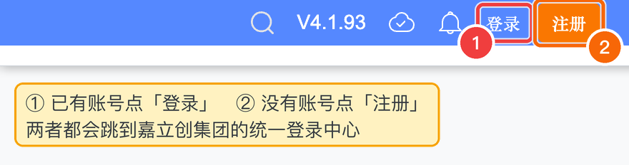
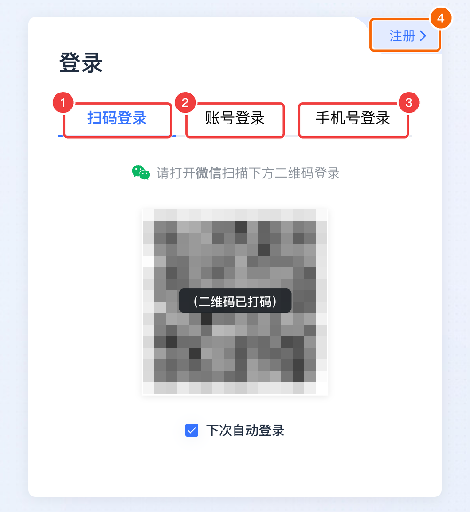
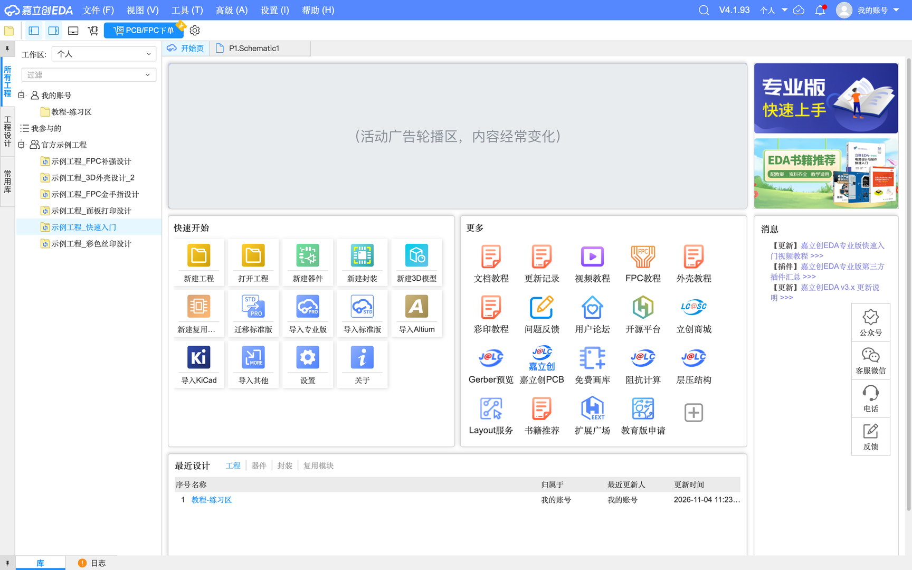
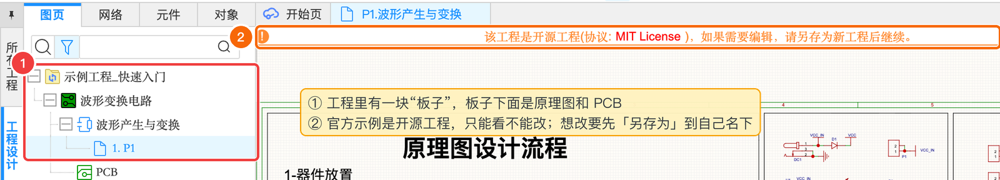

0.3 注册账号与打开编辑器
准备好浏览器，注册一个账号，打开编辑器，认识开始页，再打开一个官方示例工程随便看看。
准备浏览器#
嘉立创EDA 专业版需要比较新的浏览器，并且要用到显卡加速来画图。官方推荐使用最新版的 Chrome（谷歌浏览器）或 Firefox。本教程全部使用 Chrome 截图。
- 已安装最新版 Chrome（Chrome 菜单 → 关于 Google Chrome，会自动检查更新）
- Chrome 的“图形加速”已开启：地址栏输入
chrome://settings/system，确认「使用图形加速功能（如果可用）」是打开的 - 不要用无痕/隐身窗口打开编辑器（官方说明：隐身模式下浏览器的本地存储受限，编辑器可能打不开）
打开编辑器#
在 Chrome 地址栏输入：
https://pro.lceda.cn/editor建议按 ⌘D 把它加入书签，以后点一下就能打开。
第一次打开时还没有登录，右上角会显示「登录」和「注册」：

不登录也能看看开始页、打开官方示例工程，但要新建和保存自己的工程，必须登录（因为你的工程是保存在云端账号里的）。
注册 / 登录#
点「登录」或「注册」后，会跳转到嘉立创集团的统一登录中心。嘉立创EDA、立创商城、嘉立创下单用的是同一个账号，注册一次就都能用。

登录页上的几种方式
| 编号 | 方式 | 说明 |
|---|---|---|
| 1 | 扫码登录 | 用手机微信扫二维码，最快 |
| 2 | 账号登录 | 用户名 / 手机号 + 密码 |
| 3 | 手机号登录 | 输入手机号，接收短信验证码 |
| 4 | 注册 | 还没有账号就点这里注册（通常需要手机号接收验证码） |
认识开始页#
登录成功后会回到编辑器，最先看到的是「开始页」。把鼠标移到下面图中带编号的区域上，看看每一块是干什么的：

1
2
3
4
5
6
7
8
9
10
11
👆 把鼠标移到图上带编号的区域（或点击下面的按钮），这里会显示它的名字和用途。
图 0.3-3登录后的开始页（中间的广告轮播区已遮盖）
现在不用全部记住，只要记得两个地方：左侧的工程列表（你的工程都在这）和「快速开始」里的「新建工程」（第 1 章从这里开始）。界面的完整介绍在第 1 章 1.0 节。
小练习：打开一个官方示例工程看看#
趁热打开一个现成的工程，提前感受一下原理图和 PCB 是什么样子。不用担心改坏——官方示例是只读的。
- 在左侧工程列表里，找到「官方示例工程」，双击其中的「示例工程_快速入门」（打开需要几秒钟，底部会显示加载进度）
- 左侧会切换到「工程设计」，显示这个工程里的内容。双击「1. P1」打开原理图，双击「PCB」打开电路板
- 在画布上滚动鼠标滚轮放大缩小，按住鼠标右键拖动移动画布，迷路了就按 K 回到全图（用触控板的同学先看下一节 0.4）
- 打开 PCB 后，点顶部工具栏的「3D」按钮，可以看到 3D 效果，用鼠标拖动旋转

看完之后，可以点标签页上的 × 关掉它们。准备好了？下一节讲键盘、鼠标和触控板（会按你选的系统显示 Mac 或 Windows 的内容），一定要看。